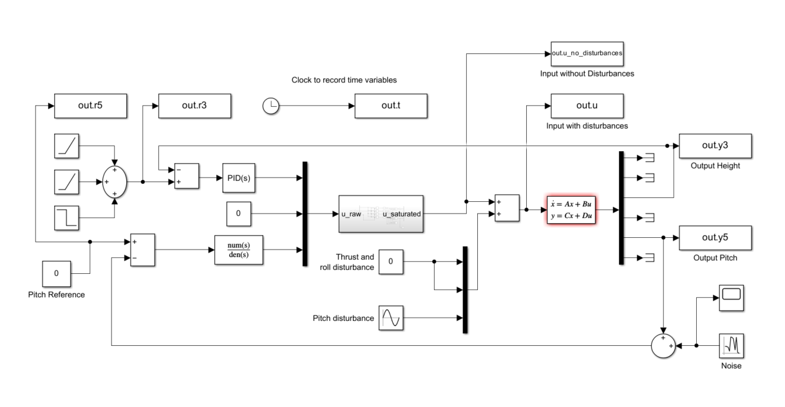
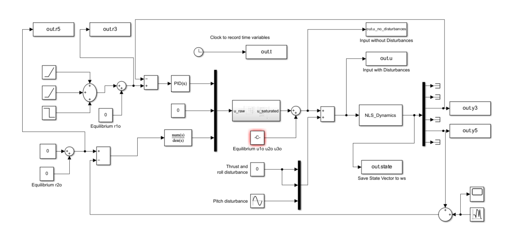
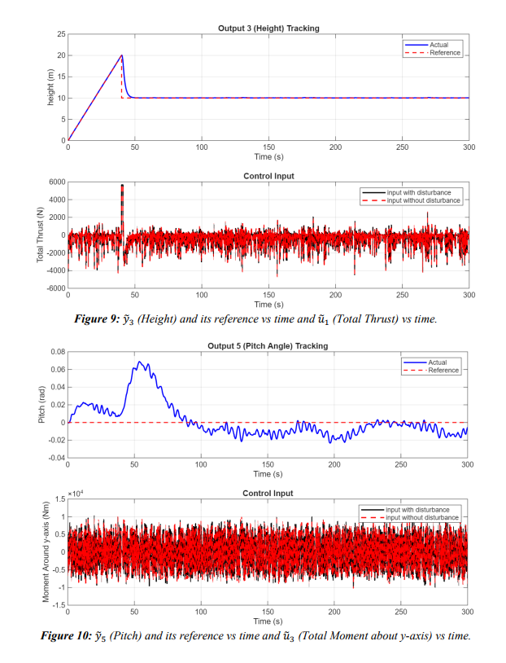
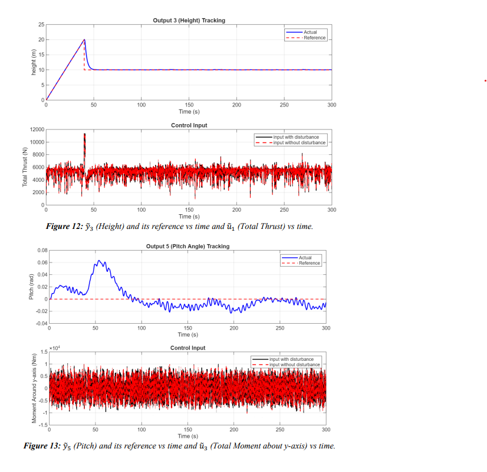
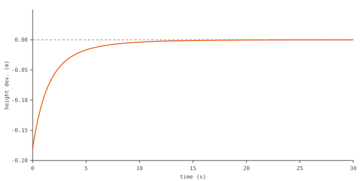

Controller design and simulation for a Mars-landing sky crane — PID, frequency-domain loop-shaping, and full-state feedback via pole placement, checked against each other on linear and nonlinear models.


nonlinear model — same controllers validated on the full dynamics
timeframe
Spring 2026
tools & methods
MATLAB
Simulink
Control System Designer
results
PID controller met the 10 m step-response spec (0.36 s rise time, 0% overshoot); loop-shaping compensator hit a 25.4 dB gain margin and 20.2° phase margin; both validated in the full nonlinear simulation under thrust, roll and pitch disturbances.
Final project for EML4312, Control of Mechanical Engineering Systems: linearizing a sky crane's nonlinear 12-state equations of motion about hover, then designing and comparing three controllers against a shared set of height and pitch reference-tracking requirements — a PID controller, a frequency-domain loop-shaping compensator, and a full-state feedback law from pole placement.
approach
Linearized the nonlinear equations of motion about hover equilibrium into state-space form, and confirmed the open-loop system is not BIBO stable (repeated poles at the origin) before designing any controller
Tuned a PID controller via root locus, trading off rise time, overshoot and steady-state error against a competing pitch-tracking requirement
Designed a frequency-domain loop-shaping compensator on the Bode plot to meet steady-state error, disturbance-rejection and positive gain/phase margin specifications
Derived a full-state feedback gain matrix by pole placement and checked it against thrust, roll and pitch disturbances
Verified every controller on both the linearized Simulink model and the full nonlinear dynamics

linear simulation — height/pitch tracking and control effort (Figures 9–10)

nonlinear simulation — height/pitch tracking and control effort (Figures 12–13)

full-state feedback — illustrative disturbance decay at the chosen poles